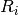
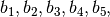

DES representations¶
The VBF library accepts to types of representations of DES [DES:77] components:
Expansion and Compression DES permutations. It can be used to represent both the Compression Permutation in the Key Transformation of DES and the Expansion Permutation Feistel Function of the DES cipher. The Compression Permutation permutes the order of the bits as well as selects a subset of bits. The Expansion Permutation expands the right half of the data, , from 32 bits to 48 bits. Because this operation changes the order of the bits as well as repeating certain bits, it is known as an expansion permutation.
DES S-box Substitution. Each S-box is a table of 4 rows and 16 columns. Each entry in the box is a 4-bit number. The 6 input bits of the S-box specify under which row and column number to look for the output.
The input bits specify an entry in the S-box as follows: Consider an S-box input of 6-bits, labeled  and . Bits
 and are combined to form a 2-bit number, from 0 to 3, which corresponds to a row in the table. The middle 4 bits,
and are combined to form a 2-bit number, from 0 to 3, which corresponds to a row in the table. The middle 4 bits,  through
through  , are combined to form a 4-bit number, from 0 to 15, which corresponds to a column in the table.
, are combined to form a 4-bit number, from 0 to 15, which corresponds to a column in the table.For example, assume that the input to the first S-box (i.e. bits 1 to 6 of the XOR function) is 110011. The first and last bits combine to form 11, which corresponds to row 3 of the first S-box. The middle 4 bits combine to form 1001, which corresponds to the column 9 of the same S-box. The entry under row 3, column 9 of S-box 1 is 11 (count rows and columns starting from 0). The value 1110 is substituted for 001011
The following figures list the eight S-boxes used in DES. Each S-box replaces a 6-bit input with a 4-bit output. Given a 6-bit input, the 4-bit output is found by selecting the row using the outer two bits, and the column using the inner four bits. For example, an input “011011” has outer bits “01” and inner bits “1101”; noting that the first row is “00” and the first column is “0000”, the corresponding output for S-box S5 would be “1001” (=9), the value in the second row, 14th column.


Library¶
A VBF class can be initialized giving its Expansion and Compression DES permutation vector with the following method:
void putexp_comp(const NTL::vec_ZZ& v)
A VBF class can be initialized giving its DES-like S-box representation matrix with the following method:
void putsbox(const NTL::mat_ZZ& S)
Example¶
The following program prints the Truth Table of a Expansion permutation and of the DES S1 S-box. The inputs are respectively the following:
[ 4 1 2 3 4 1 ]
[[14 4 13 1 2 15 11 8 3 10 6 12 5 9 0 7 ]
[ 0 15 7 4 14 2 13 1 10 6 12 11 9 5 3 8 ]
[ 4 1 14 8 13 6 2 11 15 12 9 7 3 10 5 0]
[ 15 12 8 2 4 9 1 7 5 11 3 14 10 0 6 13]]
#include <iostream>
#include <fstream>
#include "VBF.h"
int main(int argc, char *argv[])
{
using namespace VBFNS;
VBF F,G;
NTL::vec_ZZ v;
NTL::mat_ZZ S;
ifstream inputv(argv[1]);
if(!inputv) {
cerr << "Error opening " << argv[1] << endl;
return 0;
}
inputv >> v;
inputv.close();
F.putexp_comp(v);
ifstream inputS(argv[2]);
if(!inputS) {
cerr << "Error opening " << argv[2] << endl;
return 0;
}
inputS >> S;
inputS.close();
G.putsbox(S);
cout << "The Truth Table of Expansion Permutation is:"
<< endl << TT(F) << endl;
cout << endl << "The Truth Table of S1 DES S-box is:"
<< endl << TT(G) << endl;
return 0;
}
The output of the program would be the following (Only a few values of S1 Truth Table is printed for space reasons):
The Truth Table of Expansion Permutation is:
[[0 0 0 0 0 0]
[1 0 0 0 1 0]
[0 0 0 1 0 0]
[1 0 0 1 1 0]
[0 0 1 0 0 0]
[1 0 1 0 1 0]
[0 0 1 1 0 0]
[1 0 1 1 1 0]
[0 1 0 0 0 1]
[1 1 0 0 1 1]
[0 1 0 1 0 1]
[1 1 0 1 1 1]
[0 1 1 0 0 1]
[1 1 1 0 1 1]
[0 1 1 1 0 1]
[1 1 1 1 1 1]
]
The Truth Table of S1 DES S-box is:
[[1 1 1 0]
[0 0 0 0]
[0 1 0 0]
[1 1 1 1]
[1 1 0 1]
[0 1 1 1]
[0 0 0 1]
[0 1 0 0]
[0 0 1 0]
[1 1 1 0]
[1 1 1 1]
[0 0 1 0]
[1 0 1 1]
[1 1 0 1]
[1 0 0 0]
[0 0 0 1]
...